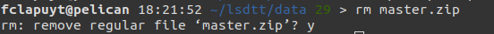

The LSDTopoTools software was developed by members of the Land Surface Dynamics (LSD) research group at the University of Edinburgh (home page).
The software aims to operate:
This software is constantly used for research and is regularly updated with new routines. Some popular techniques already implemented include:
Using your SSH client, connect to the Pelican server.
Load the required modules:
module purge
module load 2019b
module load ELIC_Python
module load CMake/.3.15.3-GCCcore-8.3.0
Return to (make sure your are in the) HOME directory:
cd
Create lsdtt directory and enter it:
mkdir lsdtt
cd lsdtt
Clone the Github repository:
git clone https://github.com/LSDtopotools/LSDTopoTools2
Go to src directory:
cd LSDTopoTools2/src
Open the build.sh file:
vim build.sh
i on your keyboard to insert text.Add the following line at the beginning (first line) of file. In vim editor, use Ctrl-Shift-V to paste some text (to copy, use Ctrl-Shift-C.
PREFIX="$(pwd)/.."
Esc on your keyboard to exit the insert mode.:wq to write and quit the text editor.Compile the driver files:
sh build.sh
It will take some time…
The LSDMappingTools module is a LSDTopoTools component to map outputs using automatic procedures. It will be useful to produce intermediate data visualisation to check results directly on the server.
To install it, execute the following sequence of commands:
# Enter lsdtt directory
cd
cd lsdtt
# Clone LSDMappingTools Github repository
git clone https://github.com/LSDtopotools/LSDMappingTools.git
Open the .bashrc file in your HOME directory using the vim command.
cd
vim .bashrc
i on your keyboard to insert text.Add the following lines at the end of file. Use Ctrl-Shift-V to paste some text (to copy, use Ctrl-Shift-C).
load_LSDTopoTools()
{
module purge
module load 2019b
module load ELIC_Python
PATH=${HOME}/lsdtt/LSDTopoTools2/bin:${PATH}
PYTHONPATH=${HOME}/lsdtt/LSDMappingTools:${PYTHONPATH}
}
Esc on your keyboard to exit the insert mode.:wq to write and quit the text editor.Reload the .bashrc file.
source .bashrc
To download the example data, execute the following lines. Return to HOME directory and enter the lsdtt directory:
cd
cd lsdtt
Create the data directory:
mkdir data
cd data
Download data from Github repository, unzip and remove archive file:
wget https://github.com/LSDtopotools/ExampleTopoDatasets/archive/master.zip
unzip master.zip
mv ./ExampleTopoDatasets-master ./ExampleTopoDatasets
rm master.zip
When removing a file or a directory, the terminal will prompt you whether you really want to remove it:

Type y to confirm (yes) or n to abort (no).
After installing the software and getting the example data, you should end up with the following directory structure (this is not the output of a specific command):
--| lsdtt
------| data
----------| subdirectories with different projects
------| LSDMappingTools
----------| subdirectories with source code and programs
------| LSDTopoTools2
----------| subdirectories with source code and programs
Before running your own analyses, it is important to make sure that the program is properly installed and set up on the server. Let’s begin by running LSDTT with the provided example data. More information about the basic usage of LSDTT is available here.
At the beginning of each new session on the server, you should load the LSDTT environment, i.e. load modules and add LSDTT to PATH. To to that, simply (because the function is stored in your .bashrc file, see “Add LSDTT variables to PATH”) type:
load_LSDTopoTools
Navigate to the directory containing the example data:
cd
cd lsdtt/data/ExampleTopoDatasets/BasicMetricsData
LSDTopoTools, you should be able to simply call lsdtt-basic-metrics command:
lsdtt-basic-metrics WA_BasicMetrics02.driver
Note: This section provides additional information about how LSDTT works. There is no need to run the commands or modify parameters files.
Starting from the basic example here above (all details here), the typical command of LSDTopoTools is composed of two parts:
lsdtt-basic-metrics WA_BasicMetrics02.driver
lsddtt-basic-metrics is the name of the module of LSDTopoTools that you ask to run.WA_BasicMetrics02.driver is the name of the file containing the input parameters used by the module. The extension of the file is .driver.Without any other parameters, you need to run the command in the directory that contains the parameters file.
Open the WA_BasicMetrics02.driver file using the following commands:
# Make sure you are in the proper directory. If not, execute the commented line below.
# cd lsdtt/data/ExampleTopoDatasets/BasicMetricsData
# Open the file
vim WA_BasicMetrics02.driver
The content of the WA_BasicMetrics02.driver file is the following:
# Parameters for extracting simple surface metrics
# Comments are preceeded by the hash symbol
# Documentation can be found at: https://lsdtopotools.github.io/LSDTT_documentation/LSDTT_basic_usage.html
# These are parameters for the file i/o
read fname: WA
write fname: WA_SecondExample
channel heads fname: NULL
# Parameters for surface metrics
surface_fitting_radius: 11
print_slope: true
print_aspect: true
print_curvature: true
print_tangential_curvature: true
In this example with such parameters, it is assumed that:
# symbol are comments. They will not be taken into account by the software.WA is the name of the DEM, without the .bil extension.WA_SecondExample.Parameters documentation can be found here.
Parameters files are named as follows: MyParametersFile.driver. They always have the same structure. These files can be created or modified using e.g. Notepad or directly via the terminal using vim. In Notepad, save them as txt files but write the .driver extension in the filename.
# These are parameters for the file i/o
# IMPORTANT: You MUST make the write directory: the code will not work if it doesn't exist.
read fname: mnt-vesdre
write fname: mnt-vesdre
channel heads fname: NULL
# Definition of the parameters to run a given script
parameter_name: parameter_value
...
...
read fname and write fname are usually the same. They define the prefix for inputs and outputs, i.e. the name of the input DEM, without the file extension.Three modules of LSDTopoTools are useful for the analyses to achieve in the frame of the research project:
lsdtt-basic-metricslsdtt-channel-extraction.lsdtt-chi-mapping.The manual for each module contains a lot of information… Focus mainly on “Appendix A” of each manual, which contains the parameters that are available, their explanation, and their potential to fulfill your needs. Each module works with a parameters file that has the same structure than the one you used for the first analysis of your study area. You only need to add or remove parameters in the fill and run it with the proper command.